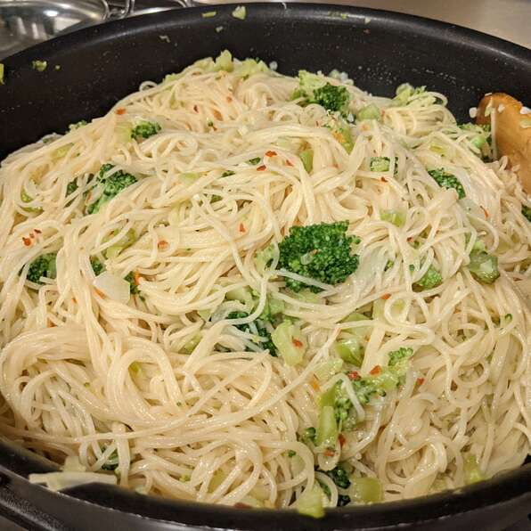

Broccoli Garlic Angel Hair Pasta

Description
Don't like broccoli? Try it with Angel Hair Pasta! This mix of pasta, broccoli, and garlic
is savory and delicious.
Ingredients
- 1.5 pounds broccoli
- 2 tablespoons olive oil
- 1/4 cup butter
- 6 gloves garlic, minced
- 1 teaspoon red pepper flakes
- 3 cups chicken stock
- salt to taste
- 1 pound angel hair pasta
- 1/2 cup shredded Parmigiano-Reggiano cheese
- 1 pinch red pepper flakes
Steps
- Cut the florets from the broccoli stems into a bowl.
- Chop remaining stems into small pieces and transfer stems to separate bowl
- Heat 2 tablespoons olive oil with butter in skillet over medium heat and cook garlie in mixture
- Stir brocolli stems into stock mixture and simmer 10-12 minutes
- Stir brocolli florets into skillet and cook brocolli sauce 2-4 minutes
- Cook angel hair pasta, about 4 minutes
- Pour broccoli sauce over pasta and mix in cheese